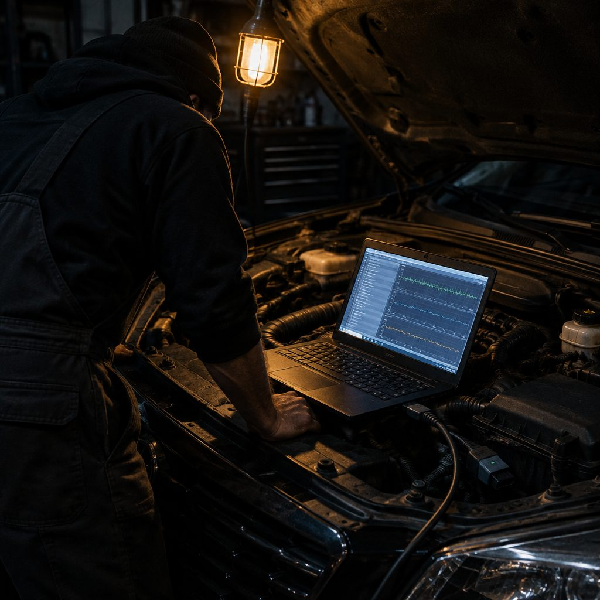
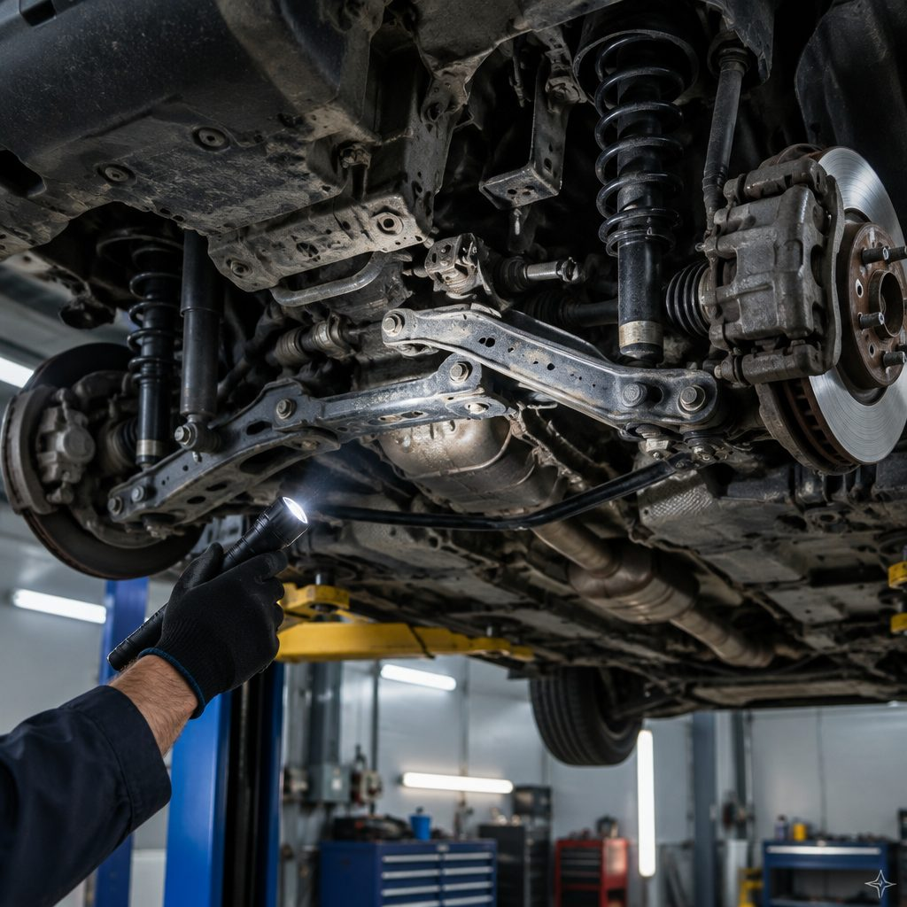

Горит Check Engine
Считываю ошибки и смотрю параметры в реальном времени. Сбросить и уехать — не мой вариант: причина останется.

Приезжаю к вашей машине сам. Считаю ошибки, смотрю живые данные, лезу эндоскопом в цилиндры. Задача не «сбросить ошибку», а найти, из-за чего она вылезла.
Шесть ситуаций, из-за которых люди звонят мне чаще всего. Если ваша не в списке — всё равно звоните, разберёмся по телефону.
Считываю ошибки и смотрю параметры в реальном времени. Сбросить и уехать — не мой вариант: причина останется.
Проверяю наддув, давление в рампе, работу форсунок и показания датчиков. Видно, где теряется мощность.
Питание, стартер, свечи и свечи накала, компрессия, подача топлива. Ищу, что именно мешает запуску.
Поднимаем машину и дёргаем всё по очереди: шаровые, наконечники, сайлентблоки, стойки. Диагностика подвески от 30 р.
Читаю ошибки КПП, температуру и давление масла, адаптации. По результату понятно: обслуживание или ремонт.
Форсунки на слив, ТНВД, EGR, сажевый фильтр. Отдельная диагностика дизельного двигателя — со своим набором проверок.
Компьютерная диагностика — это не только чтение ошибок. Смотрю, как мотор работает под нагрузкой, и сверяю с тем, что должен показывать.
Финальную цену называю по телефону до выезда: она зависит от машины, двигателя и того, что нужно проверить. Скрытых доплат на месте нет.

Подвеска от 30 р.Не нужно искать эвакуатор и стоять в очереди на сервис. Я приезжаю туда, где стоит автомобиль: двор, гараж, стоянка, трасса.


Рассказываете, что с машиной. По телефону называю цену и время.
Приезжаю со своим оборудованием. Нужна только машина и место рядом с ней.
Компьютер, замеры, при необходимости эндоскоп и подъём.
Говорю причину, варианты ремонта и стоимость. Дальше решаете вы.

Выездная автопомощь по Мозырю и всей Беларуси. Скажу по телефону, что можно проверить на месте, а когда нужен эвакуатор.
+375 (33) 360-95-61